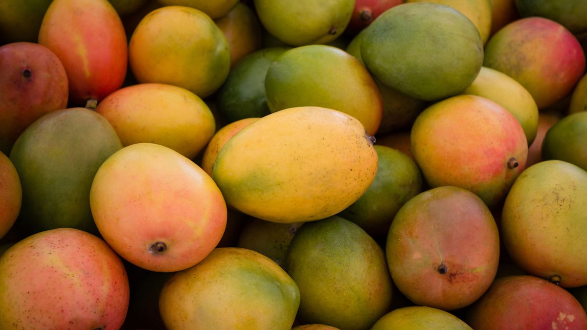

Go Back
Fruits
Flowers
Vegetables
Apple
Everything About Apple
Family/Species:
Rosaceae, Malus domestica
Description:
Deciduous tree with broad leaves, producing round fruits in various colors and flavors.
Season of Planting:
Late winter to early spring, while the tree is still dormant.
Importance:
Nutritional Value:
Apples are a rich source of dietary fiber, vitamin C, and various antioxidants like flavonoids and polyphenols, which contribute to overall health and well-being.
Heart Health:
The fiber and antioxidants in apples are associated with reducing the risk of cardiovascular diseases by lowering cholesterol levels and improving heart health.
Digestive Health:
The high fiber content in apples supports digestive health by promoting regular bowel movements and maintaining gut health.
Blood Sugar Regulation:
The soluble fiber in apples helps regulate blood sugar levels, making them a suitable snack option for individuals managing diabetes or insulin resistance.
Weight Management:
Apples are low in calories and high in fiber, which can help promote feelings of fullness and aid in weight management when included as part of a balanced diet.
High Demand:
Apples are one of the most widely consumed fruits globally, leading to a consistent demand in the market year-round.
Year-Round Availability:
With advancements in storage and transportation technology, apples are available fresh in many markets throughout the year, even outside their typical harvest season.
Versatility:
Apples can be consumed fresh, juiced, dried, or processed into various products such as applesauce, apple cider, apple pie, and apple chips, catering to diverse consumer preferences.
Export Potential:
Due to their popularity and long shelf life, apples have significant export potential, contributing to the agricultural economy of many regions.
Cultural and Culinary Significance:
Apples hold cultural significance in many societies and are commonly used in culinary traditions worldwide, further enhancing their commercial value.
Control Methods
Cultural Control:
Pruning to improve airflow and sunlight penetration, proper sanitation practices to remove fallen leaves and fruit, selecting resistant varieties.
Biological Control:
Introducing natural predators like ladybugs and lacewings to control pests like aphids and mites.
Mechanical Control:
Trapping pests like apple maggots using sticky traps, physically removing affected parts of the tree.
Chemical Control:
Using insecticidal soaps or horticultural oils for controlling pests, fungicides for diseases like apple scab.
Organic Control:
Neem oil sprays for insect control, sulfur-based fungicides for disease management, introducing beneficial nematodes to control soil-dwelling pests.
Banana
What To Know About Bananas
Family:
Musaceae
Description:
The banana fruit is botanically classified as a berry and is produced by various species of large herbaceous flowering plants in the genus Musa. Bananas typically grow in clusters, known as hands, from the plant's pseudostem. Each individual banana fruit is elongated and slightly curved, with a distinctive yellow color when ripe. The fruit is encased in a thick peel that is typically removed before consumption, revealing the soft, creamy flesh inside. Bananas vary in size and flavor depending on the cultivar, with some varieties being larger and sweeter than others.
Season of Care:
Bananas are typically planted year-round in tropical and subtropical regions where they thrive in warm temperatures and high humidity.
Importance:
Nutritional Value:
Bananas are a rich source of essential vitamins and minerals, including vitamin C, vitamin B6, potassium, manganese, and dietary fiber.
Digestive Health:
Bananas contain dietary fiber, which promotes digestive health by supporting regular bowel movements and preventing constipation.
Heart Health:
The potassium content in bananas helps regulate blood pressure and maintain heart health.
Energy Boost:
Bananas are a natural source of carbohydrates, providing a quick and sustained energy boost, making them an ideal pre- or post-workout snack.
Vitamin C:
Bananas contain vitamin C, an antioxidant that supports immune function and promotes overall health.
Global Trade:
Bananas are one of the most widely traded fruits globally, with major exporting countries including Ecuador, the Philippines, Costa Rica, and Colombia. They are transported and sold worldwide, contributing significantly to international trade and economic activity.
Supermarket Sales:
Bananas are a staple fruit in supermarkets and grocery stores worldwide, with high demand due to their affordability, convenience, and nutritional value.
Food Industry:
Bananas are used in various food products such as baked goods, smoothies, ice creams, and baby food. They are also dried, fried, or processed into banana chips or powder for snacks and culinary purposes.
Export Markets:
Bananas are exported in various forms, including fresh, frozen, and processed (e.g., puree, concentrate), catering to different consumer preferences and market demands.
Employement and Livelihoods:
Banana cultivation and export provide employment opportunities and livelihoods for millions of people worldwide, particularly in tropical regions where bananas are grown.
Control Methods
Cultural Control:
Planting banana plants in well-drained, fertile soil with good organic matter content is crucial. Proper spacing between plants allows for adequate airflow, reducing the risk of fungal diseases. Regular removal of old leaves and debris helps prevent pest and disease buildup.
Biological Control:
Introducing natural predators such as predatory mites, ladybugs, and beneficial nematodes can help control pests like banana weevils and aphids. Encouraging biodiversity in the banana plantation can also support a healthy ecosystem that naturally regulates pest populations.
Mechanical Control:
Handpicking pests like banana weevils and banana aphids can be effective, especially in smaller plantations. Physical barriers such as sticky traps or pheromone traps can help monitor and control pest populations.
Chemical Control:
When necessary, targeted treatments such as insecticides or pesticides may be used to manage specific pests. For example, systemic insecticides can be applied to control banana weevils, while neem-based products can be effective against aphids and other sucking pests. Fungicides may also be used to manage diseases like Panama disease and black Sigatoka.
Organic Control:
Organic methods for banana pest and disease management include practices like companion planting with pest-repellent plants such as marigolds, using natural insect repellents like garlic spray, and applying compost or organic fertilizers to improve soil health and plant resilience. Additionally, cultural practices like crop rotation and intercropping with legumes can help improve soil fertility and reduce pest pressure.
Strawberry
What To Know About Strawberries
Family:
Rosaceae
Description:
Herbaceous perennial with trifoliate leaves and red, juicy fruits.
Season of Care:
Spring or fall, depending on the climate
Importance:
Nutritional Value:
Strawberries are rich in essential nutrients such as vitamin C, manganese, folate, and potassium. They are also a good source of dietary fiber.
Antioxidants:
Strawberries are packed with antioxidants, including flavonoids and phenolic compounds, which help protect cells from damage caused by free radicals.
Heart Health:
The high levels of antioxidants and potassium in strawberries contribute to heart health by reducing the risk of cardiovascular diseases.
Blood Sugar Regulation:
Despite their natural sweetness, strawberries have a low glycemic index, making them a suitable option for people managing blood sugar levels.
Cancer Prevention:
The antioxidants in strawberries, particularly ellagic acid and quercetin, have been linked to potential cancer-fighting properties.
High Demand:
Strawberries are one of the most popular and widely consumed fruits globally, leading to a consistent demand in the market.
Year-Round Availability:
While fresh strawberries have a short growing season in certain regions, advancements in agricultural practices and transportation allow for year-round availability in many markets.
Versatility:
Strawberries are versatile and can be consumed fresh, frozen, or processed into various products such as jams, preserves, juices, and desserts, catering to different consumer preferences.
Export Potential:
Due to their popularity and appeal, strawberries have a significant export potential, contributing to the agricultural economy of many regions.
Value-Added Products:
Beyond fresh fruit sales, strawberries are used in value-added products like gourmet chocolates, skincare products, and flavored beverages, expanding their commercial reach.
Control Methods
Cultural Control:
Planting in well-drained soil, proper spacing for good airflow, removing old leaves and runners, applying straw mulch to prevent fruit contact with soil.
Biological Control:
Introducing predatory insects like ladybugs and ground beetles to control pests such as aphids and slugs.
Mechanical Control:
Handpicking pests like slugs and snails, using barriers like copper tape around planters to deter slugs.
Chemical Control:
Applying insecticidal soaps for aphids, iron phosphate baits for slugs and snails, sulfur-based fungicides for diseases like powdery mildew
Organic Control:
Utilizing companion planting with plants like borage to attract beneficial insects, using diatomaceous earth as a natural slug barrier, applying compost tea to boost plant health and disease resistance.

Mango
What To Know About Mangoes
Family:
Mangifera indica
Description:
Mango plants belong to the Anacardiaceae family and are tropical, evergreen trees that can grow up to 30 meters tall. They have a dense canopy of dark green leaves and produce large, oval-shaped fruits known as mangoes. Mango fruits have a smooth skin that can range in color from green to yellow, orange, or red when ripe. The flesh of the mango is juicy, sweet, and aromatic, with a single large seed or stone in the center.
Season of Care:
The ideal season for planting mango trees depends on the local climate and growing conditions. In tropical regions with consistent warm temperatures, mango trees can be planted year-round.
Importance:
Nutritional Value:
Mangoes are rich in vitamins (including vitamin C, vitamin A, and vitamin E), minerals (such as potassium and magnesium), and antioxidants (including beta-carotene and phenolic compounds).
Digestive Health:
Mangoes contain dietary fiber, which promotes digestive health by supporting regular bowel movements and preventing constipation. Immune Support: The high vitamin C content in mangoes helps boost the immune system and supports overall health.
Eye Health:
Mangoes are a good source of vitamin A and beta-carotene, which are important for maintaining healthy vision.
Skin Health:
The antioxidants in mangoes help protect the skin from oxidative stress and may contribute to overall skin health.
Global Trade:
Mangoes are one of the most traded tropical fruits globally, with major exporting countries including India, Mexico, Thailand, and the Philippines
Supermarket Sales:
Mangoes are widely available in supermarkets and grocery stores worldwide, with high demand due to their sweet flavor and versatility in culinary applications.
Food Industry:
Mangoes are used in various food products such as juices, smoothies, desserts, jams, and chutneys. They are also dried, frozen, or processed into mango puree or concentrate for use in food manufacturing.
Export Markets:
Fresh mangoes are exported to international markets, catering to diverse consumer preferences and culinary traditions.
Employement and Livelihoods:
Mango cultivation and trade provide employment opportunities and livelihoods for millions of people worldwide, particularly in tropical regions where mangoes are grown.
Control Methods
Cultural Control:
Planting mango trees in well-drained soil with proper spacing allows for good airflow and reduces the risk of fungal diseases. Pruning dead or diseased branches and removing fallen leaves can help prevent the spread of pests and diseases. Proper irrigation and fertilization also contribute to plant health.
Biological Control:
Introducing natural predators such as ladybugs, lacewings, and predatory mites can help control common mango pests like mango leafhoppers, aphids, and mango mealybugs. Encouraging biodiversity in the orchard through the preservation of natural habitats and planting insectary plants can support a balanced ecosystem that regulates pest populations.
Mechanical Control:
Handpicking pests like mango mealybugs and caterpillars can be effective, especially in smaller orchards. Physically removing infected plant parts and pruning infested branches can help manage pest and disease outbreaks.
Chemical Control:
When necessary, targeted treatments such as insecticides or pesticides may be used to manage specific pests. For example, neem-based products can be effective against mango leafhoppers and mango mealybugs, while botanical insecticides like pyrethrin can control caterpillars and fruit flies. Fungicides may also be applied to manage diseases like anthracnose and powdery mildew.
Organic Control:
Organic methods for mango pest and disease management include practices like using neem oil or insecticidal soap sprays to control pests, applying compost or organic fertilizers to improve soil health, and utilizing beneficial microbes and biopesticides to suppress pathogenic fungi. Cultural practices such as mulching with organic materials and maintaining proper plant nutrition can also enhance plant resilience against pests and diseases.
Orange
What To Know About Oranges
Family:
Citrus × sinensis
Description:
Orange plants belong to the Rutaceae family and are evergreen trees with glossy, dark green leaves and fragrant white flowers. They produce round or oval fruits known as oranges, which have a thick, dimpled peel that can range in color from orange to yellow-orange. The flesh of the orange is juicy, sweet, and acidic, with numerous segments containing pulp and seeds.
Season of Care:
Orange trees are typically planted in the early spring or late winter, before the onset of new growth. This allows the trees to establish their root systems before the growing season begins. In warmer climates where frost is not a concern, orange trees can also be planted in the fall.
Importance:
Nutritional Value:
Oranges are rich in vitamin C, a powerful antioxidant that supports immune function, collagen production, and wound healing.
Dietary Fiber:
Oranges contain dietary fiber, which promotes digestive health, helps regulate blood sugar levels, and may reduce the risk of heart disease.
Other Vitamins and Minerals:
Oranges also provide essential nutrients such as vitamin A, potassium, calcium, and folate, which contribute to overall health and well-being.
Eye Health:
Mangoes are a good source of vitamin A and beta-carotene, which are important for maintaining healthy vision.
Hydration:
Oranges are composed of about 87% water, making them a hydrating and refreshing fruit choice.
Global Trade:
Oranges are one of the most widely cultivated and traded citrus fruits globally, with major producing countries including Brazil, China, the United States, India, and Spain.
Supermarket Sales:
Oranges are a staple fruit in supermarkets and grocery stores worldwide, with high demand due to their refreshing flavor and nutritional benefits.
Juice Industry:
Oranges are commonly used to produce orange juice, a popular beverage consumed for its taste and health benefits. The orange juice industry is a significant sector of the global beverage market.
Food Industry:
Oranges are used in various food products such as jams, marmalades, desserts, and sauces, contributing to the food processing industry.
Employement and Livelihoods:
Orange cultivation and trade provide employment opportunities and livelihoods for millions of people worldwide, including farmers, farmworkers, processors, distributors, and retailers.
Control Methods
Cultural Control:
Planting orange trees in well-drained soil with adequate spacing promotes good root development and reduces the risk of root rot and other soil-borne diseases. Proper irrigation management and mulching help maintain soil moisture and temperature, while regular pruning of dead or diseased branches improves airflow and reduces pest and disease pressure.
Biological Control:
Introducing natural predators such as parasitic wasps, ladybugs, and lacewings can help control common orange pests like aphids, scale insects, and citrus leafminer. Encouraging biodiversity in the orchard by preserving natural habitats and planting beneficial insect-attracting flowers supports a healthy ecosystem that regulates pest populations.
Mechanical Control:
Handpicking pests like scale insects and caterpillars can be effective, especially in smaller orchards. Physically removing infected plant parts and pruning infested branches can help manage pest and disease outbreaks.
Chemical Control:
When necessary, targeted treatments such as insecticides or pesticides may be used to manage specific pests. For example, horticultural oils or insecticidal soaps can control aphids and scale insects, while botanical insecticides like pyrethrin can control caterpillars and citrus leafminer. Fungicides may also be applied to manage diseases like citrus canker and greasy spot.
Organic Control:
Organic methods for orange pest and disease management include practices like using neem oil or insecticidal soap sprays to control pests, applying compost or organic fertilizers to improve soil health, and utilizing beneficial microbes and biopesticides to suppress pathogenic fungi. Cultural practices such as mulching with organic materials and maintaining proper plant nutrition can also enhance plant resilience against pests and diseases.
Pineapple
What To Know About Pineapple
Family/Species:
Bromeliaceae/Ananas comosus.
Description:
Pineapples are tropical fruit with a unique appearance characterized by their spiky, rough exterior and crown of tough, waxy leaves. The fruit typically has a cylindrical shape with a yellowish-brown to golden-brown outer skin and a juicy, fibrous, yellow flesh inside. Pineapples are known for their sweet and tangy flavor, with a refreshing taste that makes them a popular choice for consumption both fresh and in various culinary dishes.
Season of Planting:
Pineapples are typically planted during the spring and early summer months in tropical regions. However, they can be grown year-round in regions with a warm and humid climate. Pineapple plants thrive in well-drained soil with adequate moisture and sunlight. It takes about 18-24 months for a pineapple plant to reach maturity and produce fruit, with the fruiting season typically occurring in the summer months.
Importance:
Rich in Nutrients:
Pineapple is a nutrient-dense fruit, providing essential vitamins and minerals such as vitamin C, vitamin A, potassium, and manganese.
Digestive Aid:
Pineapple contains bromelain, an enzyme that aids in digestion by breaking down proteins and promoting digestive health.
Anti-Inflammatory Properties:
Bromelain in pineapple has anti-inflammatory properties, which may help reduce inflammation and alleviate symptoms of conditions like arthritis.
Immune Support:
The high vitamin C content in pineapple helps boost the immune system and supports overall health.
Hydration:
Pineapple has a high water content, contributing to hydration and promoting healthy skin and overall well-being.
Global Trade:
Pineapples are one of the most traded tropical fruits globally, with major producing countries including Costa Rica, the Philippines, Thailand, and Indonesia.
Supermarket Sales:
Pineapples are widely available in supermarkets and grocery stores worldwide, with high demand due to their sweet flavor and versatility in culinary applications.
Juice Industry:
Pineapples are used to produce pineapple juice, a popular beverage consumed for its refreshing taste and nutritional benefits. The pineapple juice industry is a significant sector of the global beverage market.
Hospitality and Culinary Industry:
Pineapples are used in various culinary applications, including desserts, salads, sauces, and cocktails, contributing to the hospitality and culinary sectors.
Control Methods
Cultural Control:
Planting pineapple in well-drained, sandy soil with good organic matter content is important for healthy root development and disease prevention. Proper spacing between plants allows for adequate airflow, reducing the risk of fungal diseases. Mulching with organic materials helps retain moisture and suppress weed growth.
Biological Control:
Introducing natural predators such as predatory mites, ladybugs, and lacewings can help control common pineapple pests like mealybugs, scale insects, and spider mites. Encouraging biodiversity in the pineapple plantation by preserving natural habitats and planting insect-attracting flowers supports a healthy ecosystem that regulates pest populations.
Mechanical Control:
Handpicking pests like mealybugs and scale insects can be effective, especially in smaller plantations. Physically removing infected plant parts and pruning infested leaves can help manage pest and disease outbreaks.
Chemical Control:
When necessary, targeted treatments such as insecticides or pesticides may be used to manage specific pests. For example, horticultural oils or insecticidal soaps can control aphids and spider mites, while botanical insecticides like neem oil can control mealybugs and scale insects. Fungicides may also be applied to manage diseases like leaf spot and fruit rot.
Organic Control:
Organic methods for pineapple pest and disease management include practices like using neem oil or insecticidal soap sprays to control pests, applying compost or organic fertilizers to improve soil health, and utilizing beneficial microbes and biopesticides to suppress pathogenic fungi. Cultural practices such as mulching with organic materials and maintaining proper plant nutrition can also enhance plant resilience against pests and diseases.